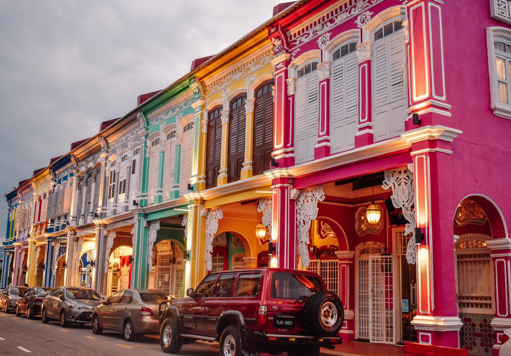
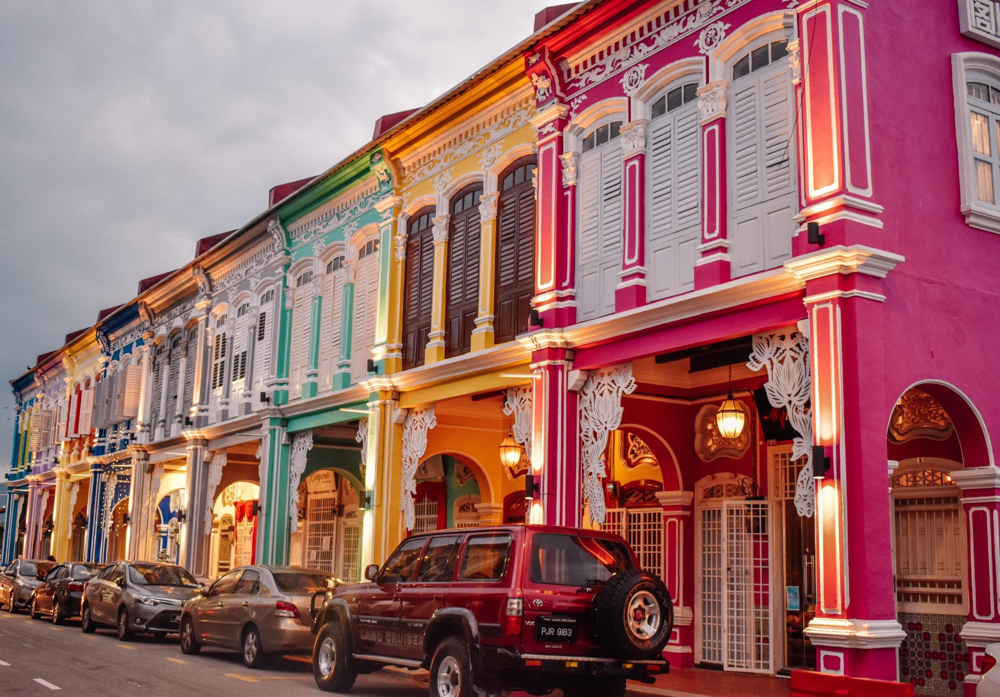

8.Snake Temple
The Snake Temple, also known as the Temple of the Azure Cloud, is a unique and intriguing religious site located in Bayan Lepas, Penang. Founded in the early 19th century by a Taoist priest, the temple is renowned for its association with snakes, which are believed to be manifestations of the temple’s spiritual presence.
 
